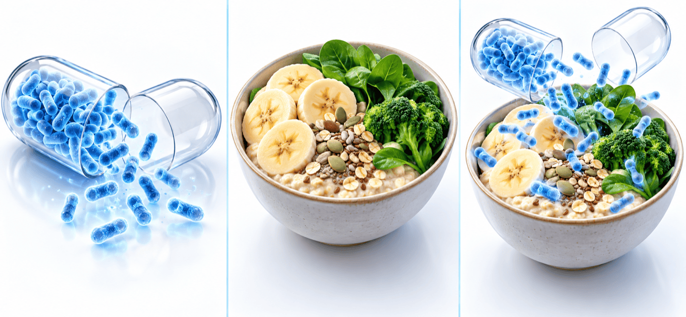

증상이 없는 분께는 반드시 필요하지 않습니다
증상이 없는 분께는 반드시 필요하지 않습니다
연수강좌 질의응답 · 연자의 답변
증상이 없는 건강한 사람에게 프로바이오틱스를 반드시 권할 필요는 없습니다. 일부 균주는 도움이 될 수 있지만 효과가 제품과 균주마다 다르고, 건강 증진 목적으로 오래 복용해야 한다는 근거는 아직 충분하지 않습니다.
세 가지는 이렇게 다릅니다

프로바이오틱스(probiotics)살아 있는 유익균 자체(유산균 제품)
프리바이오틱스(prebiotics)유익균의 먹이가 되는 성분
신바이오틱스(synbiotics)둘을 함께 담아 상승효과를 기대하는 조합
프리바이오틱스와 신바이오틱스는 과민성 장증후군에서 연구가 많지 않다고 강의에서 설명했습니다.
어떤 경우에 어떻게 생각할까요
| 필수 아님 | 장 증상이 없는 건강한 분 | 반드시 드셔야 하는 것은 아닙니다. 효과는 제품·균주마다 다릅니다. |
| 보조 치료 | 과민성 장증후군 증상이 있는 분 | 더부룩함(bloating)이 두드러지거나, 약물치료를 원하지 않거나, 다른 치료와 함께 쓰는 보조 치료로 권할 수 있습니다. 일부 균주에서 증상 개선이 보고되었습니다. |
| 진료 필요 | 경고 증상이 있는 분 | 혈변 · 밤에도 이어지는 설사 · 이유 없는 체중 감소 · 철결핍성 빈혈 · 위장관 암 가족력이 있으면 유산균으로 넘기지 말고 진료실에서 대장내시경 등 검사를 받으셔야 합니다. |
 과민성 장증후군(IBS)에서 연구가 말해 주는 것
과민성 장증후군(IBS)에서 연구가 말해 주는 것
| 학회 | 권고 | 근거 수준 |
|---|---|---|
| 한국(KSNM) | 약한 권고 | 매우 낮음 |
| 미국 ACG | 조건부 권고 | 매우 낮음 |
| 미국 AGA | 해당 권고 없음 | |
- 임상시험 82건, 10,332명 — 일부 균주에서 전반적 증상과 복통 개선이 보고되었으나 대부분 근거 수준은 낮음~매우 낮음입니다.
- 효과는 크지 않고(modest) 모든 분에게 나타나지 않으며, 치료의 주인공이 아니라 곁에서 돕는 보조 역할이라고 연자는 설명합니다.
제품을 고르기 전에 확인할 점
1
지금 장 증상이 있나요? 없다면 필수가 아닙니다.
2
근거는 제품명이 아니라 균주(strain) 기준으로 읽습니다.
3
제품마다 균주와 함량이 달라 연구 결과를 그대로 적용하기 어렵고, 특정 균주를 일률적으로 권할 근거도 아직 충분하지 않습니다.